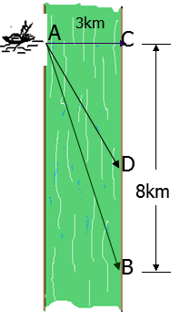

Câu 21.
Một người đàn ông muốn chèo thuyền ở vị trí A tới điểm B về phía hạ lưu bờ đối diện, càng nhanh càng tốt, trên một bờ sông thẳng rộng ${3km}$ (như hình vẽ). Anh có thể chèo thuyền của mình trực tiếp qua sông để đến C và sau đó chạy đến B, hay có thể chèo trực tiếp đến B, hoặc anh ta có thể chèo thuyền đến một điểm D giữa C và B và sau đó chạy đến $B$. Biết anh ấy có thể chèo thuyền ${6km/h}$, chạy ${8km/h}$ và quãng đường ${BC = 8km}$. Biết tốc độ của dòng nước là không đáng kể so với tốc độ chèo thuyền của người đàn ông. Tìm khoảng thời gian ngắn nhất để người đàn ông đến $B$. (Kết quả làm tròn đến hàng đơn vị, theo đơn vị phút).
